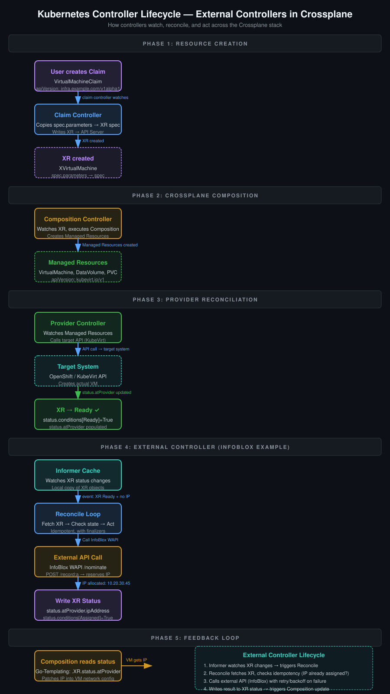

External controllers are the bridge between Crossplane's declarative resource model and the real world — APIs, databases, message queues, and infrastructure systems that don't speak Kubernetes. This explainer covers the full lifecycle: from Kubernetes controller fundamentals, through Crossplane's external controller patterns, to a production-grade InfoBlox IPAM example.
Before understanding Crossplane external controllers, you need to understand Kubernetes controllers. Every Kubernetes controller follows the same fundamental pattern: watch for changes to resources, compare desired state to actual state, and make them match.
Most Go-based Kubernetes controllers use controller-runtime, the official client library maintained by the Kubernetes SIG-APISig. It provides:
Controller — manages the reconcile loop and event watchingReconciler interface — your business logic lives hereClient — typed CRUD operations against the K8s APIBuilder — fluent API for setting up watches and predicatesManager — bootstraps the controller manager, caches, and leader electionEvery controller implements Reconcile(ctx, request) (result, err). That's the entire contract.
Here's the minimal reconcile loop. Everything else is optimization.
type IPAMReconciler struct {
client.Client
scheme *runtime.Scheme
infoBlox *infoblox.Client
}
func (r *IPAMReconciler) Reconcile(ctx context.Context, req ctrl.Request) (ctrl.Result, error) {
// 1. Fetch the resource
ipReq := &infrav1.IPAddressRequest{}
if err := r.Get(ctx, req.NamespacedName, ipReq); err != nil {
return ctrl.Result{}, client.IgnoreNotFound(err)
}
// 2. Check if deletion is requested
if !ipReq.DeletionTimestamp.IsZero() {
return r.handleDeletion(ctx, ipReq)
}
// 3. Ensure finalizer exists
if !contains(ipReq.Finalizers, "ipam.infra.example.com/finalizer") {
ipReq.Finalizers = append(ipReq.Finalizers, "ipam.infra.example.com/finalizer")
if err := r.Update(ctx, ipReq); err != nil {
return ctrl.Result{}, err
}
}
// 4. Reconcile desired state
return r.reconcileIP(ctx, ipReq)
}The loop has four phases: fetch → deletion check → finalizer guard → reconcile. Every production controller follows this structure.
Controllers don't poll. They watch. The ctrl.NewControllerManagedBy builder sets up informers that watch the K8s API for changes:
func (r *IPAMReconciler) SetupWithManager(mgr ctrl.Manager) error {
return ctrl.NewControllerManagedBy(mgr).
For(&infrav1.IPAddressRequest{}).
Watches(
&source.Kind{Type: &corev1.Secret{}},
handler.EnqueueRequestsFromMapFunc(r.secretsToIPAMRequests),
).
WithOptions(controller.Options{
MaxConcurrentReconciles: 3,
}).
Complete(r)
}For() watches the primary resource. Watches() watches secondary resources and maps their events to primary reconcile requests. This is how external controllers react to changes in dependent resources — like a secret containing API credentials being updated.
Reconcile function. This is why idempotency matters — the loop may call Reconcile multiple times for the same resource.
Crossplane runs four controllers inside the crossplane pod. Each manages a specific layer of the abstraction stack. External controllers operate outside this stack, watching Crossplane resources as their trigger.
Watches XResource objects. Ensures the XR's status.conditions reflect lifecycle state (Creating, Ready, Deleting, Error). Does not create or manage child resources — that's the Composition controller's job.
Watches Claim objects. When a Claim is created, it creates a corresponding XR by copying spec.parameters into the XR's spec. Also binds the XR back to the Claim via spec.claimRef.
Watches XRs. When an XR is created or updated, the Composition controller executes the Composition (either declarative or via Composition Functions) to create/update Managed Resources. It patches the XR's status.atProvider with results from the Composition.
Watches Managed Resources created by the Composition. The provider (a separate deployment, e.g., the KubeVirt provider) reads the Managed Resource CR and calls the external cloud API to create the actual infrastructure. This is the last step of the Crossplane pipeline.
Crossplane excels at managing resources that have a Kubernetes CRD proxy (via Providers). But many systems don't fit this model:
External controllers fill these gaps. They watch Crossplane resources (XRs, Managed Resources, or Claims) and perform actions against external APIs.

There are three established patterns for external controllers in the Crossplane ecosystem. Each has different tradeoffs.
The controller reads an XR, calls an external API, and writes the result back to XR.status. The Composition can then read from status and patch it into child resources.
# External controller writes to XR status
apiVersion: infra.example.com/v1alpha1
kind: XVirtualMachine
metadata:
name: xvirtualmachine-web-server
spec:
compositionSelector:
matchLabels:
infra.example.com/kubevirt: "true"
status:
atProvider:
ipAddress: "10.20.30.45"
hostname: "web-server-01.infra.local"status.atProvider fields, but the standard Patch-and-Transform function has limited support for reading from status. Go-Templating functions have full access. This is the main reason Go-Templating is preferred for enrichment workflows.
The controller creates a separate Kubernetes resource (not managed by Crossplane's Composition) based on XR state. The external resource is owned by the XR via SetControllerReference, ensuring garbage collection.
apiVersion: dns.infra.example.com/v1alpha1
kind: DNSRecord
metadata:
name: web-server-01
ownerReferences:
- apiVersion: infra.example.com/v1alpha1
kind: XVirtualMachine
name: xvirtualmachine-web-server
controller: true
spec:
hostname: web-server-01.infra.local
ip: 10.20.30.45
zone: infra.localThe controller enriches the connection secret that Crossplane creates for the XR. Useful for credentials, API endpoints, or connection strings that come from external systems.
| Criterion | Status Enrichment | Resource Creation | Secret Enrichment |
|---|---|---|---|
| Best for | Simple data injection | Complex external resources | Credentials and connection info |
| Visibility | XR status (hidden from end users) | Separate CR (visible in kubectl) | Secret (sensitive, obscured) |
| Composition access | Go-Templating can read status | Patch-and-Transform can cross-reference | Secret mounted as env/volume |
| Lifecycle | Tied to XR lifecycle | Garbage-collected via ownerRef | Tied to XR lifecycle |
| Complexity | Low | High (new CRD + controller) | Medium |
This section walks through building a complete external controller that assigns static IP addresses from InfoBlox Grid Manager. The controller watches IPAddressRequest XRs, calls the InfoBlox WAPI, and writes the assigned IP back to the XR status.
InfoBlox is an enterprise IP address management (IPAM) system. The WAPI (Web API) is a RESTful JSON API. Key endpoints:
GET /wapi/v2.13/ipaddr/ipv4/{ip} — Check if an IP is availablePOST /wapi/v2.13/record:a — Create an A record (reserves the IP)GET /wapi/v2.13/network/{network_ref} — List available IPs in a networkDELETE /wapi/v2.13/record:a/{record_ref} — Remove a DNS record (releases IP)Auth is typically basic auth (username/password) or certificate-based. All responses include _ref fields — unique identifiers for every object that you need for updates and deletes.
First, define the types that map to the InfoBlox WAPI:
package infoblox
import "encoding/json"
// Client talks to InfoBlox WAPI.
type Client struct {
BaseURL string
Username string
Password string
HTTPClient *http.Client
}
// AllocRequest is what the external controller receives from the XR.
type AllocRequest struct {
NetworkView string `json:"network_view"`
Network string `json:"network"`
Hostname string `json:"hostname"`
Description string `json:"description,omitempty"`
}
// AllocResponse is what the controller writes back.
type AllocResponse struct {
IP string `json:"ip"`
RecordRef string `json:"record_ref"`
Network string `json:"network"`
}
// WAPIARecord is the JSON structure for creating an A record.
type WAPIARecord struct {
Name string `json:"name"`
Clustertype string `json:"view"`
Ptrdname string `json:"ptrdname,omitempty"`
Comment string `json:"comment,omitempty"`
}
// WAPIResponse is the standard InfoBlox WAPI response wrapper.
type WAPIResponse struct {
Ref string `json:"_ref"`
Text string `json:"text,omitempty"`
}
// WAPIError is returned on WAPI failures.
type WAPIError struct {
Code int `json:"Error"`
Reason string `json:"reason"`
Fields string `json:"fields,omitempty"`
}
// NominatedAddress is returned when searching for available IPs.
type NominatedAddress struct {
Address string `json:"address"`
Ref string `json:"_ref"`
}Implement the HTTP interactions with InfoBlox:
package infoblox
import (
"bytes"
"encoding/json"
"fmt"
"io"
"net/http"
)
func (c *Client) doRequest(method, path string, body interface{}) ([]byte, error) {
var reqBody io.Reader
if body != nil {
b, err := json.Marshal(body)
if err != nil {
return nil, fmt.Errorf("marshal request body: %w", err)
}
reqBody = bytes.NewReader(b)
}
req, err := http.NewRequest(method, c.BaseURL+path, reqBody)
if err != nil {
return nil, fmt.Errorf("create request: %w", err)
}
req.SetBasicAuth(c.Username, c.Password)
req.Header.Set("Content-Type", "application/json")
resp, err := c.HTTPClient.Do(req)
if err != nil {
return nil, fmt.Errorf("execute request: %w", err)
}
defer resp.Body.Close()
respBody, err := io.ReadAll(resp.Body)
if err != nil {
return nil, fmt.Errorf("read response: %w", err)
}
if resp.StatusCode < 200 || resp.StatusCode >= 300 {
var apiErr WAPIError
if err := json.Unmarshal(respBody, &apiErr); err == nil {
return nil, fmt.Errorf("WAPI error %d: %s", apiErr.Code, apiErr.Reason)
}
return nil, fmt.Errorf("HTTP %d: %s", resp.StatusCode, string(respBody))
}
return respBody, nil
}
// AllocateIP reserves an IP in InfoBlox and creates an A record.
func (c *Client) AllocateIP(req AllocRequest) (*AllocResponse, error) {
// Step 1: Nominate an IP from the network
nominatePath := fmt.Sprintf(
"/wapi/v2.13/ipaddr/ipv4/%s?_function=nominate&nominated=%d",
req.Network, 1,
)
body, err := c.doRequest("POST", nominatePath, nil)
if err != nil {
return nil, fmt.Errorf("nominate IP: %w", err)
}
var nominated []NominatedAddress
if err := json.Unmarshal(body, &nominated); err != nil {
return nil, fmt.Errorf("unmarshal nomination response: %w", err)
}
if len(nominated) == 0 {
return nil, fmt.Errorf("no IP available in network %s", req.Network)
}
ip := nominated[0].Address
// Step 2: Create the A record (this reserves the IP)
aRecord := WAPIARecord{
Name: req.Hostname,
Clustertype: req.NetworkView,
Comment: req.Description,
}
body, err = c.doRequest("POST", "/wapi/v2.13/record:a", aRecord)
if err != nil {
return nil, fmt.Errorf("create A record: %w", err)
}
var wapiResp WAPIResponse
if err := json.Unmarshal(body, &wapiResp); err != nil {
return nil, fmt.Errorf("unmarshal A record response: %w", err)
}
return &AllocResponse{
IP: ip,
RecordRef: wapiResp.Ref,
Network: req.Network,
}, nil
}
// ReleaseIP removes an A record, freeing the IP in InfoBlox.
func (c *Client) ReleaseIP(recordRef string) error {
_, err := c.doRequest("DELETE", recordRef, nil)
return err
}_function=nominate is the key to IP assignment. It atomically selects an available IP from a network range and reserves it temporarily. Without nomination, two controllers could pick the same IP. The A record creation is what makes the reservation permanent.
The controller that ties everything together. It watches IPAddressRequest XRs and calls the InfoBlox client:
package controllers
import (
"context"
"fmt"
"time"
infrav1 "github.com/example/infra-api/api/v1alpha1"
"github.com/example/ipam-controller/pkg/infoblox"
"k8s.io/apimachinery/pkg/api/meta"
metav1 "k8s.io/apimachinery/pkg/apis/meta/v1"
"k8s.io/apimachinery/pkg/types"
ctrl "sigs.k8s.io/controller-runtime"
"sigs.k8s.io/controller-runtime/pkg/client"
"sigs.k8s.io/controller-runtime/pkg/controller"
"sigs.k8s.io/controller-runtime/pkg/reconcile"
)
// IPAddressRequestReconciler watches XRVirtualMachine XRs
// and assigns static IPs from InfoBlox.
type IPAddressRequestReconciler struct {
client.Client
scheme *runtime.Scheme
infoBlox *infoblox.Client
leaseTimeout time.Duration
}
func (r *IPAddressRequestReconciler) Reconcile(ctx context.Context, req ctrl.Request) (ctrl.Result, error) {
// 1. Fetch the XR
xr := &infrav1.XRVirtualMachine{}
if err := r.Get(ctx, req.NamespacedName, xr); err != nil {
return ctrl.Result{}, client.IgnoreNotFound(err)
}
// 2. Skip if already has an IP assigned
if xr.Status.AtProvider.IPAddress != "" {
return ctrl.Result{}, nil
}
// 3. Check if XR is ready for IP assignment
// (VM must be provisioned first — wait for Composition to finish)
if !meta.IsStatusConditionTrue(xr.Status.Conditions, "Ready") {
// Requeue after a delay — VM not ready yet
return ctrl.Result{RequeueAfter: 10 * time.Second}, nil
}
// 4. Allocate IP from InfoBlox
ipReq := infoblox.AllocRequest{
NetworkView: xr.Spec.NetworkView,
Network: xr.Spec.Network,
Hostname: xr.Name,
Description: fmt.Sprintf("VM %s allocated by Crossplane", xr.Name),
}
resp, err := r.infoBlox.AllocateIP(ipReq)
if err != nil {
// Update XR status with error condition
meta.SetStatusCondition(&xr.Status.Conditions, metav1.Condition{
Type: "IPAddressAssigned",
Status: metav1.ConditionFalse,
Reason: "InfoBloxError",
Message: fmt.Sprintf("Failed to allocate IP: %v", err),
})
if updateErr := r.Client.Status().Update(ctx, xr); updateErr != nil {
return ctrl.Result{}, updateErr
}
// Requeue with backoff
return ctrl.Result{RequeueAfter: 30 * time.Second}, nil
}
// 5. Write IP to XR status
xr.Status.AtProvider.IPAddress = resp.IP
xr.Status.AtProvider.Hostname = xr.Name + ".infra.local"
meta.SetStatusCondition(&xr.Status.Conditions, metav1.Condition{
Type: "IPAddressAssigned",
Status: metav1.ConditionTrue,
Reason: "IPAllocated",
Message: fmt.Sprintf("Assigned IP %s from network %s", resp.IP, resp.Network),
})
if err := r.Client.Status().Update(ctx, xr); err != nil {
return ctrl.Result{}, err
}
return ctrl.Result{}, nil
}
func (r *IPAddressRequestReconciler) SetupWithManager(mgr ctrl.Manager) error {
return ctrl.NewControllerManagedBy(mgr).
For(&infrav1.XRVirtualMachine{}).
WithOptions(controller.Options{
MaxConcurrentReconciles: 5,
}).
Complete(r)
}The XR schema needs fields that the controller reads and fields where it writes results:
apiVersion: apiextensions.crossplane.io/v1
kind: ExtendedResourceDefinition
metadata:
name: xvirtualmachines.infra.example.com
spec:
group: infra.example.com
names:
kind: XRVirtualMachine
plural: xvirtualmachines
connectionSecretKeys:
- credentials
versions:
- name: v1alpha1
served: true
storage: true
schema:
openAPIV3Schema:
type: object
properties:
spec:
type: object
properties:
networkView:
type: string
description: "InfoBlox network view (e.g., Default)"
network:
type: string
description: "InfoBlox network grid member reference"
parameters:
type: object
properties:
compute:
type: object
properties:
vcpus: { type: integer }
memory: { type: string }
storage:
type: object
properties:
size: { type: string }
image: { type: string }
status:
type: object
properties:
atProvider:
type: object
description: "Fields written by external controllers"
properties:
ipAddress:
type: string
description: "Assigned static IP from InfoBlox"
hostname:
type: string
description: "Fully qualified hostname"
conditions:
type: array
items:
type: object
properties:
type: { type: string }
status: { type: string }
reason: { type: string }
message: { type: string }The Composition reads the IP from XR status (after the external controller assigns it) and patches it into the VM spec. Using Go-Templating for full status access:
apiVersion: apiextensions.crossplane.io/v1
kind: Composition
metadata:
name: vm-kubevirt-with-ip
labels:
crossplane.io/xrd: xvirtualmachines.infra.example.com
infra.example.com/kubevirt: "true"
infra.example.com/ipam: infoblox
spec:
mode: Pipeline
pipeline:
- step: build-vm-spec
functionRef:
name: crossplane-function-go-templating
inputs:
apiVersion: gotemplating.crt.sh/v1alpha1
kind: GoTemplate
spec:
template:
apiVersion: kubevirt.io/v1
kind: VirtualMachine
metadata:
name: {{ .XR.metadata.name }}-vm
namespace: openshift-virtualization
labels:
infra.example.com/managed-by: crossplane
spec:
running: true
template:
spec:
domain:
cpu:
cores: {{ .XR.spec.parameters.compute.vcpus }}
resources:
requests:
memory: {{ .XR.spec.parameters.compute.memory }}
networks:
- pod: {}
# IP is patched from XR status by the external controller
# The VM uses the assigned IP via hostNetwork or OVN-Kubernetes static IP
terminationGracePeriodSeconds: 30
volumes:
- name: rootdisk
dataVolume:
name: {{ .XR.metadata.name }}-dv
- step: build-dv-spec
functionRef:
name: crossplane-function-patch-and-transform
inputs:
- ref:
name: {{ .XR.metadata.name }}-dv
kind: DataVolume
policy:
optional: false
functionConfigRef:
name: vm-dv-patch-configReady status on the XR before assigning an IP. This ensures the VM is provisioned first. The Composition then reads the IP from status.atProvider and configures the VM's network. This ordering is critical — you don't want to reserve an IP before the VM exists.
Every reconcile call must be idempotent. The K8s controller-runtime library may call Reconcile multiple times for the same resource due to:
kubectl annotate --force triggersIdempotency pattern — always check current state before acting:
func (r *Reconciler) Reconcile(ctx context.Context, req ctrl.Request) (ctrl.Result, error) {
xr := &infrav1.XRVirtualMachine{}
r.Get(ctx, req.NamespacedName, xr)
// Already done? Skip.
if xr.Status.AtProvider.IPAddress != "" {
return ctrl.Result{}, nil
}
// Check if InfoBlox already has this hostname
existingIP, err := r.infoBlox.LookupByHostname(xr.Name)
if err == nil && existingIP != "" {
// IP already exists — just update status, don't allocate new
xr.Status.AtProvider.IPAddress = existingIP
r.Status().Update(ctx, xr)
return ctrl.Result{}, nil
}
// Neither status nor InfoBlox has it — allocate
resp, err := r.infoBlox.AllocateIP(...)
// ...
}Don't return errors that cause infinite requeue loops. Use ctrl.Result{RequeueAfter: duration} for transient errors and status conditions for permanent ones:
func (r *Reconciler) handleAPIError(err error, xr *infrav1.XRVirtualMachine) (ctrl.Result, error) {
// Transient errors (network timeout, rate limit)
if isTransient(err) {
meta.SetStatusCondition(&xr.Status.Conditions, metav1.Condition{
Type: "IPAddressAssigned", Status: metav1.ConditionFalse,
Reason: "TransientError",
Message: err.Error(),
})
r.Status().Update(context.TODO(), xr)
return ctrl.Result{RequeueAfter: exponentialBackoff()}, nil
}
// Permanent errors (invalid config, not found)
meta.SetStatusCondition(&xr.Status.Conditions, metav1.Condition{
Type: "IPAddressAssigned", Status: metav1.ConditionFalse,
Reason: "PermanentError",
Message: err.Error(),
})
r.Status().Update(context.TODO(), xr)
// Don't requeue — this won't self-heal
return ctrl.Result{}, nil
}Never hardcode API credentials. Use Kubernetes Secrets or external secret managers:
func (r *Reconciler) SetupWithManager(mgr ctrl.Manager) error {
// Read credentials from a K8s Secret at startup
secret := &corev1.Secret{}
if err := mgr.GetClient().Get(context.TODO(),
types.NamespacedName{Namespace: "crossplane-system", Name: "infoblox-creds"}, secret); err != nil {
return fmt.Errorf("read infoblox secret: %w", err)
}
r.infoBlox = &infoblox.Client{
BaseURL: "https://infoblox.example.com",
Username: string(secret.Data["username"]),
Password: string(secret.Data["password"]),
HTTPClient: &http.Client{Timeout: 30 * time.Second},
}
return ctrl.NewControllerManagedBy(mgr).
For(&infrav1.XRVirtualMachine{}).
Watches(
&source.Kind{Type: &corev1.Secret{}},
handler.EnqueueRequestsFromMapFunc(r.requeueOnSecretChange),
).
Complete(r)
}cert-manager with External Secrets Operator for production. Hardcoding credentials in Secrets is acceptable for development but not for production. The External Secrets Operator pulls from Vault, AWS Secrets Manager, or Azure Key Vault and syncs to K8s Secrets with automatic rotation.
External controllers should expose health endpoints for monitoring:
func (r *Reconciler) SetupHealthChecks(mgr ctrl.Manager) error {
mgr.GetHealthzCheckFactory().Register("infoblox-connection", func(req *http.Request) error {
_, err := r.infoBlox.Ping()
if err != nil {
return fmt.Errorf("infoblox unreachable: %w", err)
}
return nil
})
return nil
}Monitor these metrics in Prometheus:
reconcile_total — count of reconcile attempts by resultreconcile_duration_seconds — histogram of reconcile timesinfoblox_api_errors_total — count of API errors by typeip_allocation_latency_seconds — time from XR creation to IP assignmentGiven the reconciler code above, trace what happens when:
XRVirtualMachine with spec.networkView: "Default" and spec.network: "10.20.30.0/24"Ready10.20.30.45For each step, answer: What does the controller do? What gets written to XR status? What does the Composition see?
External controllers extend Crossplane beyond what providers can handle. They follow the same reconcile loop pattern as any Kubernetes controller but operate on Crossplane resources as their trigger.
The three patterns — status enrichment, resource creation, and secret enrichment — cover most use cases. Status enrichment is the simplest and most common: the controller reads an XR, calls an external API, and writes results back to status.atProvider. The Composition then reads those results and patches them into child resources.
The InfoBlox example demonstrates the full stack: Go types for the WAPI, an HTTP client with basic auth, a reconciler that watches XRs and handles the full lifecycle (allocate, update, release), and a Composition that consumes the assigned IP. The key design decisions are idempotency (check before acting), timing (wait for VM ready before allocating IP), and error handling (transient vs permanent).
External controllers are deployed as separate deployments in the cluster, managed by ArgoCD alongside Crossplane components. They need RBAC permissions to read XRs and write to their status. They scale independently of Crossplane's built-in controllers.